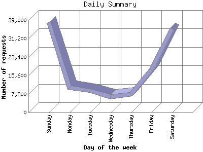

The Daily Summary identifies the level of activity as a total for each day of the week. This summary also compares the level of activity on weekdays and weekends as a total for the report time frame.

| Day of the week | Number of requests | Number of page requests | |
|---|---|---|---|
| 1. | Sunday | 38,149 | 534 |
| 2. | Monday | 10,580 | 371 |
| 3. | Tuesday | 9,309 | 291 |
| 4. | Wednesday | 6,604 | 367 |
| 5. | Thursday | 7,629 | 226 |
| 6. | Friday | 17,992 | 274 |
| 7. | Saturday | 35,432 | 556 |
| Total Weekdays | 52,114 | 1,529 | |
| Total Weekend | 73,581 | 1,090 | |
This report was generated on November 18, 2012 15:00.
Report time frame October 25, 2012 17:36 to November 17, 2012 21:41.
| Web statistics report produced by: analog 6.0 / Report Magic 2.21 |